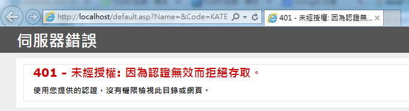
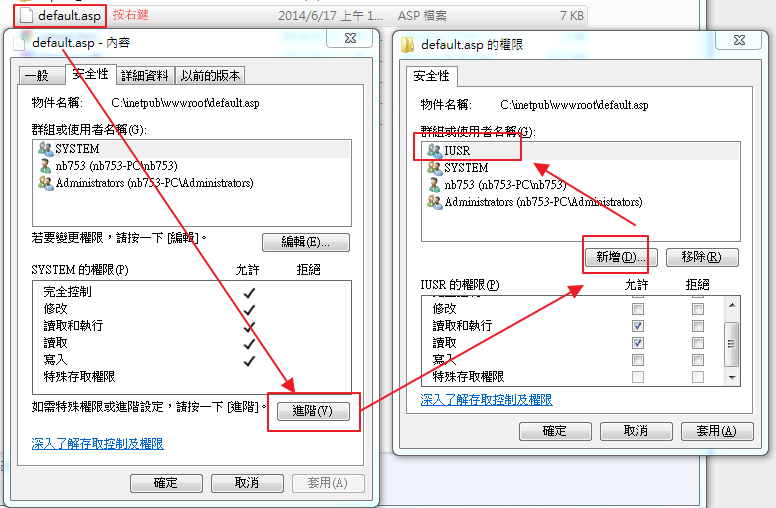
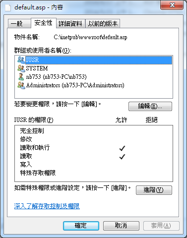
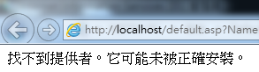
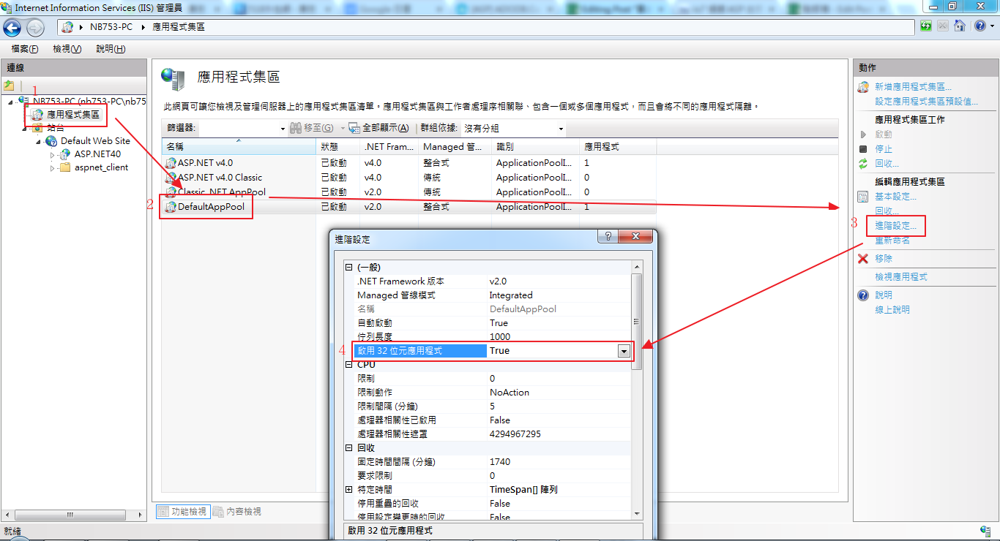
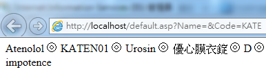
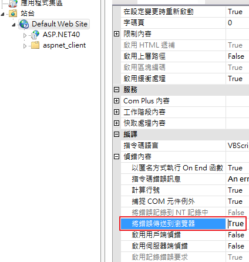
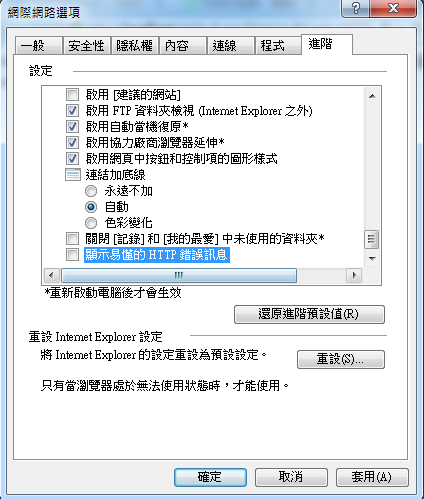
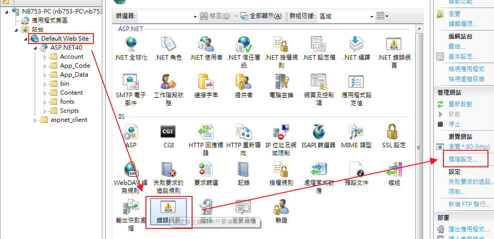
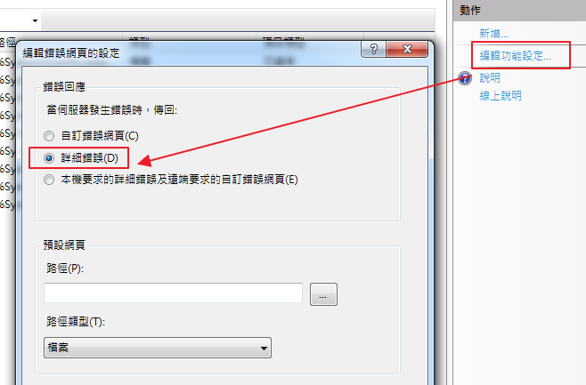

當出現「500 - 內部伺服器錯誤。 您要尋找的資源有問題而無法顯示。」時怎麼辦?
先講當使用ASP+mdb架設一個查資料網站後所遇到的情況
狀況一、401 - 未經授權: 因為認證無效而拒絕存取。
網站設定好正要本機輸入網址讀資料出現
http://localhost/default.asp?Name=&Code=KATEN01&Product=&Chi=&Pregnancy=&Indications=&Side=

查看default.asp並沒有IUSR權限，故新增一個IUSR匿名帳號權限，讓使用者可以讀取資料

新增完後如下圖

但問題又來了。
狀況二、找不到提供者。它可能未被正確安裝。

因為IIS預設不啟動32位元應用程式，通常你灌的office是32位元，如果你的ASP程式會去撈access資料庫的話則要開啟他。

搞定，資料已出來

附上一些利於偵錯的參考資料
當你的網站出現「500 - 內部伺服器錯誤。 您要尋找的資源有問題而無法顯示。」攏統的錯誤訊息怎麼辦呢?
1.站台->ASP->啟用用戶端偵錯 = True

2.Internet Explorer->工具->網際網路選項->進階->設定值->顯示好記的 HTTP 錯誤訊息 = 未勾選

3.站台->錯誤網頁(要點兩下進去)->編輯功能設定(在右邊動作區塊)->請選擇"詳細錯誤"(無論本機遠端都顯示錯誤<<原本預設值是本機顯示錯誤,遠端不顯示錯誤>>)
 